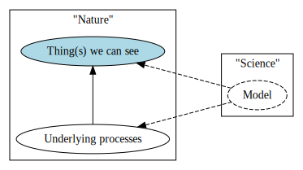
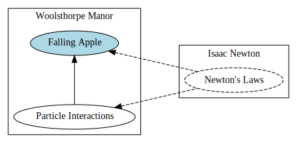
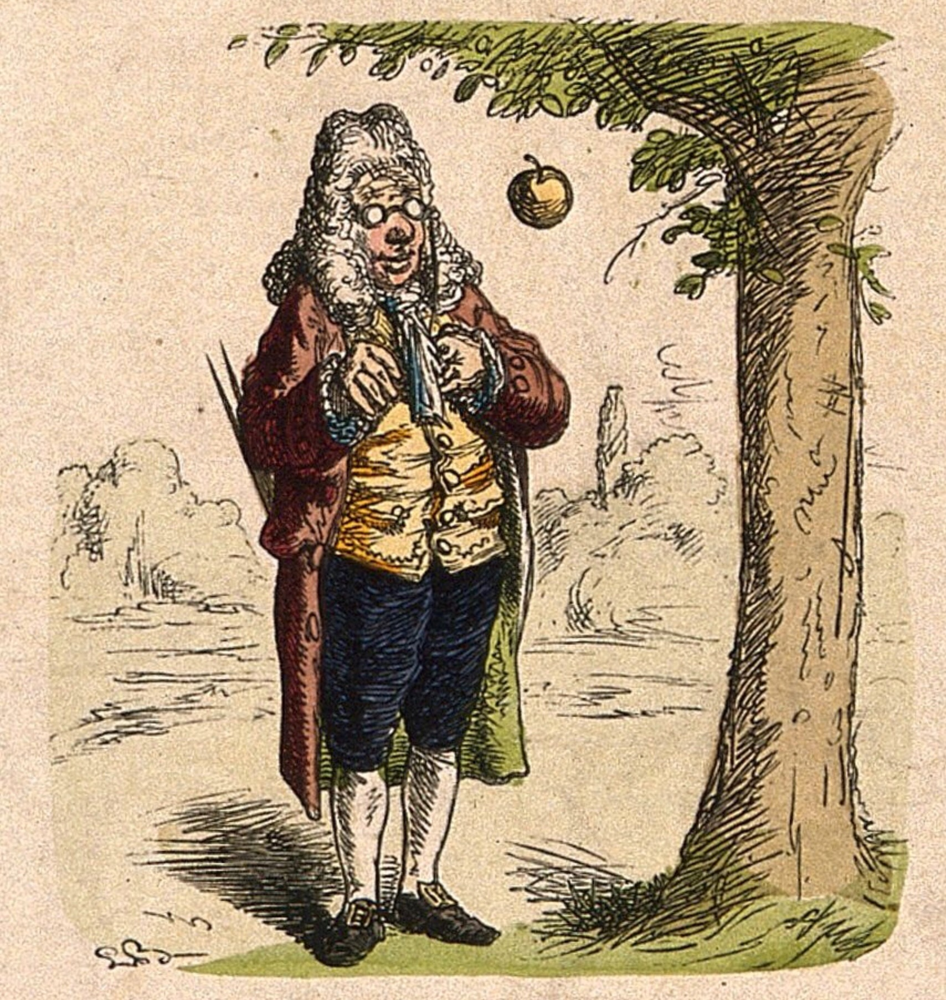
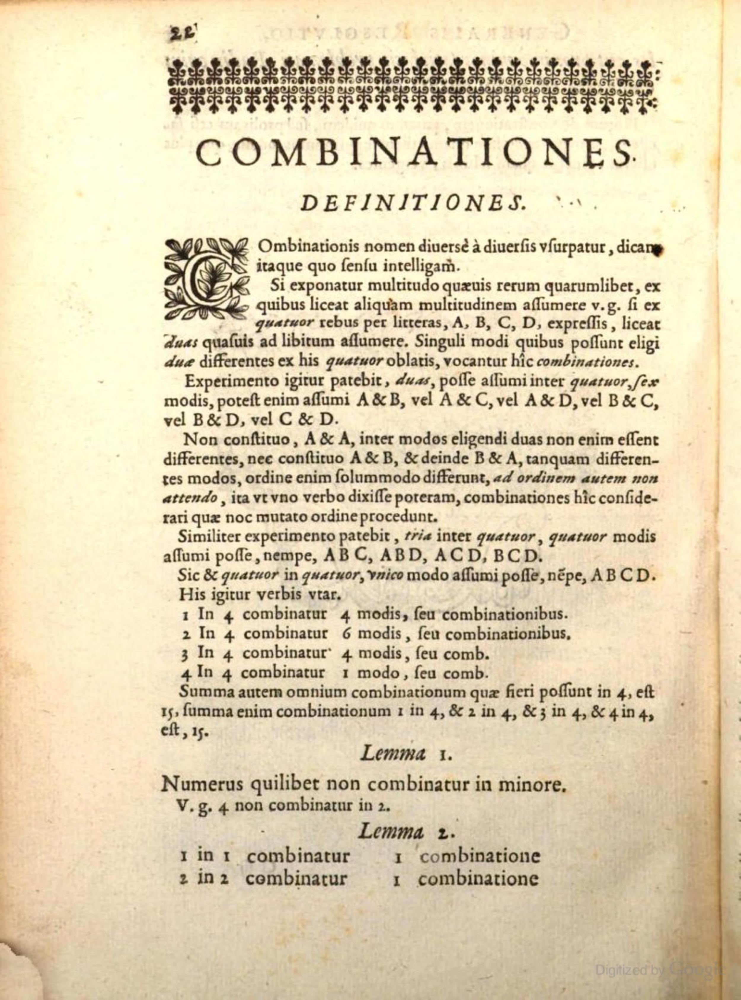
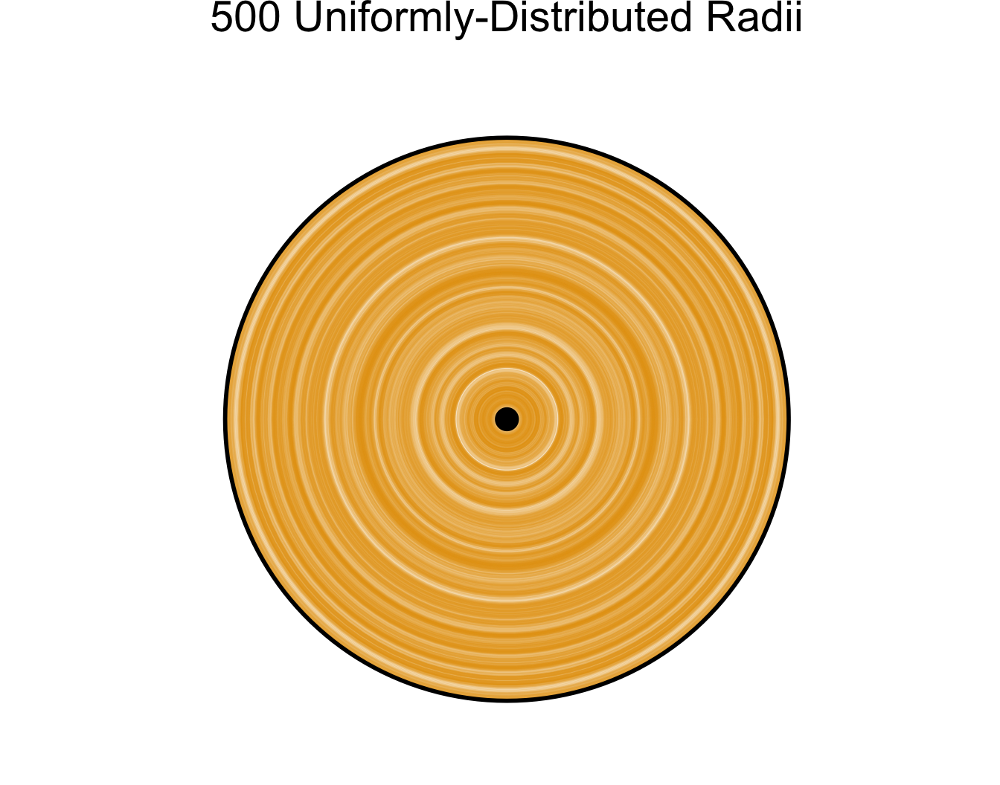
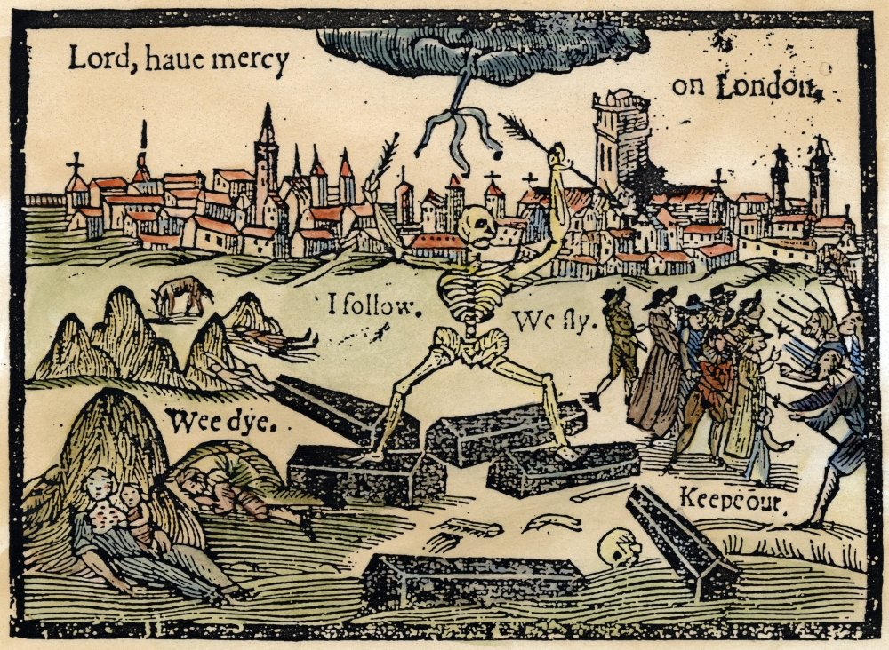

# For slides
library(ggplot2)
cbPalette <- c("#E69F00", "#56B4E9", "#009E73", "#F0E442", "#0072B2", "#D55E00", "#CC79A7")
options(ggplot2.discrete.colour = cbPalette)
# Theme generator, for given sizes
dsan_theme <- function(plot_type = "full") {
if (plot_type == "full") {
custom_base_size <- 16
} else if (plot_type == "half") {
custom_base_size <- 22
} else if (plot_type == "quarter") {
custom_base_size <- 28
} else {
# plot_type == "col"
custom_base_size <- 22
}
theme <- theme_classic(base_size = custom_base_size) +
theme(
plot.title = element_text(hjust = 0.5),
plot.subtitle = element_text(hjust = 0.5),
legend.title = element_text(hjust = 0.5),
legend.box.background = element_rect(colour = "black")
)
return(theme)
}
knitr::opts_chunk$set(fig.align = "center")
g_pointsize <- 5
g_linesize <- 1
# Technically it should always be linewidth
g_linewidth <- 1
g_textsize <- 14
remove_legend_title <- function() {
return(theme(
legend.title = element_blank(),
legend.spacing.y = unit(0, "mm")
))
}Week 2: Introduction to Probabilistic Modeling
DSAN 5100: Probabilistic Modeling and Statistical Computing
Section 03
Class Sessions
Schedule
| Start | End | Topic | |
|---|---|---|---|
| Lecture | 6:30pm | 6:40pm | About Me → |
| 6:40pm | 6:55pm | Review → | |
| 6:55pm | 7:10pm | Sampling and Combinatorics → | |
| 7:10pm | 7:25pm | Probability Fundamentals → | |
| 7:25pm | 7:50pm | Statistics Fundamentals → | |
| Break! | 7:50pm | 8:00pm | |
| Lab | 8:00pm | 8:50pm | Lab 1 Demonstrations |
| 8:50pm | 9:00pm | Lab Assignment Overview |
About Me
Prof. Jeff Introduction!
- Born and raised in NW DC → high school in Rockville, MD
- University of Maryland: Computer Science, Math, Economics (2008-2012)

Grad School
- Studied abroad in Beijing (Peking University/北大) → internship with Huawei in Hong Kong (HKUST)
- Stanford for MS in Computer Science (2012-2014)
- Research Economist at UC Berkeley (2014-2015)

- Columbia (NYC) for PhD[+Postdoc] in Political Science (2015-2023)
Dissertation (Political Science + History)
“Our Word is Our Weapon”: Text-Analyzing Wars of Ideas from the French Revolution to the First Intifada

Research (Labor Economics)
- “Monopsony in Online Labor Markets”: Machine Learning to enhance causal estimates of the effect of job description language on uptake rate
- “Freedom as Non-Domination in the Labor Market”: Game-theoretic models of workers’ rights (monopsony vs. labor discipline)
- “Unsupervised Extraction of Workplace Rights and Duties from Collective Bargaining Agreements”: Linguistic (dependency) parses of contracts → time series of worker vs. employer rights and responsibilities over time

Review
Deterministic Processes
- Given a set of inputs, we can compute the outcome exactly
- Example: Given the radius of a circle, we can compute its area without any uncertainty. \(r \mapsto \pi r^2\)
- (The fact that we can compute the outcome doesn’t mean that it’s easy to do so! See, e.g., the double pendulum)

The pendulum example points to the fact that the notion of a chaotic system, one which is “sensitive to initial conditions”, is different from that of a stochastic system.
“Holy Grail” Deterministic Model: Newtonian Physics





\[ \leadsto F_g = G\frac{m_1m_2}{r^2} \]
← Dr. Zirkel follows Newton’s famous steps. Coloured wood engraving. Wellcome Collection (Public Domain)
But What Happens When…
\[ \text{Outcome}\left(\text{Dice Roll}\right) = \; ?\frac{?_1?_2}{?^2} \]
{kind=link}

Random Processes
- Can’t compute the outcome exactly, but can still say something about potential outcomes!
- Example: randomly chosen radius \(r \in [0,1]\), what can we say about \(A = \pi r^2\)?
- Unif: \([0,\pi]\) equally likely
- Exp: closer to \(0\) more likely
Code
plot_circ_with_distr <- function(N, radii, ptitle, alpha=0.1) {
theta <- seq(0, 360, 4)
#hist(radii)
circ_df <- expand.grid(x = theta, y = radii)
#circ_df
ggplot(circ_df, aes(x = x, y = y, group = y)) +
geom_path(alpha = alpha, color = cbPalette[1], linewidth=g_linesize) +
# Plot the full unit circle
geom_path(data = data.frame(x = theta, y = 1), aes(x = x), linewidth=g_linesize) +
geom_point(data = data.frame(x = 0, y = 0), aes(x = x), size = g_pointsize) +
coord_polar(theta = "x", start = -pi / 2, direction = -1) +
ylim(0, 1) +
# scale_x_continuous(limits=c(0,360), breaks=seq(0,360,by=45)) +
scale_x_continuous(limits = c(0, 360), breaks = NULL) +
dsan_theme("quarter") +
labs(
title = ptitle,
x = NULL,
y = NULL
) +
# See https://stackoverflow.com/a/19821839
theme(
axis.line = element_blank(),
axis.text = element_blank(),
axis.ticks = element_blank(),
axis.title = element_blank(),
panel.border = element_blank(),
panel.grid.major=element_blank(),
panel.grid.minor=element_blank(),
plot.margin = unit(c(0,0,0,0), "cm"),
title = element_text(size=18)
)
}
N <- 500
radii <- runif(N, 0, 1)
title <- paste0(N, " Uniformly-Distributed Radii")
alpha <- 0.2
plot_circ_with_distr(N, radii, title, alpha)
Code
library(ggplot2)
N <- 1000
radii <- rexp(N, 4)
title <- paste0(N, " Exponentially-Distributed Radii")
plot_circ_with_distr(N, radii, title, alpha=0.15)
Data = Ground Truth + Noise
- Depressing but true origin of statistics (as opposed to probability): the Plague 😷


Random Variables
- In algebra, to solve problems we work with variables
- In probability theory, to solve problems we work with random variables
- Recall the difference between random and deterministic: \(A = \pi r^2\) tells us that, given a value of \(r\), we can solve for the unique value of \(A\)
- In probability theory, however, there is no one “true” value of a random variable \(X\).
- Let \(X = f(N)\) mean that \(X\) is the result of a rolled die, where the die has \(N\) sides.
- Plugging in \(N = 6\) (standard 6-sided die) still doesn’t mean we know “the” value of \(X\). However, (if the die is fair) we do know
\[ \Pr(X = 1) = \Pr(X = 2) = \cdots = \Pr(X = 6) = \frac{1}{6} \]
Discrete vs. Continuous
- Many complicated definitions, often misleading or unintuitive!
- How I want you to remember: How many possible values between two known values?
- Discrete: e.g., number of siblings
- I have 2 siblings, you have 3 siblings… How many values (sibling counts) in between?
- Continuous: e.g., temperature
- It is 27.0° C in my room, 28.0° C in your room… How many values (temperatures) in between?
- So, if \(X\) is the result of a rolled die, is \(X\) discrete or continuous? How many values can be rolled between 3 and 4?
Thinking About Independence
- We’ll define it formally later; for now, this is our working definition:
Combinatorics
Naïve Definition of Probability
- Sample Space: The set of all possible outcomes of an experiment
- Event: A subset of the sample space
Example: Flipping Two Coins
- Sample space \(S = \{TT, TH, HT, HH\}\)
- Event \(E_1\): Result of first flip is \(H\), result of second flip is \(T\) \(\implies\) \(E_1 = \{HT\}\)
- Event \(E_2\): At least one \(H\) \(\implies\) \(E_2 = \{TH, HT, HH\}\)
\[ \begin{align*} \Pr(E_1) &= \frac{|\{HT\}|}{|S|} = \frac{|\{HT\}|}{|\{TT, TH, HT, HH\}|} = \frac{1}{4} \\ \Pr(E_2) &= \frac{|\{TH, HT, HH\}|}{|S|} = \frac{|\{TH, HT, HH\}|}{|\{TT, TH, HT, HH\}|} = \frac{3}{4} \end{align*} \]
Events \(\neq\) Outcomes!
- Outcomes are things, events are sets of things
- Subtle but extremely important distinction!
- In the coin flip example:
- The event \(E_1 = \{HT\}\) can be confused with the outcome \(HT\).
- So, try to remember instead the event \(E_2 = \{TH, HT, HH\}\): it is more clear, in this case, how this event does not correspond to any individual outcome
Back to the Naïve Definition
- The naïve definition tells us that probabilities are just ratios of counts:
- Count the number of ways the event \(E\) can happen, count the total number of things that can happen, and divide!
- This is why we begin studying probability by studying combinatorics: the mathematics of counting
Combinatorics: Ice Cream Possibilities


Grouping vs. Ordering
- In standard statistics/combinatorics introductions you’ll learn different counting formulas for when order matters vs. when order doesn’t matter
- This is not a mathematical distinction so much as a pragmatic distinction: what are you trying to accomplish by counting?
- Problems with extremely similar descriptions can differ in small detail, so that the units you need to distinguish between in one version differ from the units you need to distinguish between in the other.
Does Order Matter?
- Simple case (for intuition): school only has 4 students. In this case, how many ways are there to form the swim team? What about the student government?
- Swim team: \(1\) way. You have only one choice, let all 4 students onto team
- Student government: \(4 \cdot 3 \cdot 2 \cdot 1 = 24\) ways. You have to let all 4 in, but you have a choice of who is President, Vice President, Secretary, and Treasurer
- How did we get \(4 \cdot 3 \cdot 2 \cdot 1\)? (Think about the ice cream example…)
- Start by choosing the President: 4 choices
- Now choose the Vice President: only 3 students left to choose from
- Now choose the Secretary: only 2 students left to choose from
- Now choose the Treasurer: only 1 student left to choose from
Permutations vs. Combinations
- Permutations: How many ways can I choose groups of size \(k\) out of \(n\) total objects, where order within groups matters: \(P_{n,k}\) (sometimes written \(_nP_k\)).
- In this case, we want to count \((a,b)\) and \((b,a)\) as two separate groups
- Combinations: How many ways can I choose groups of size \(k\) out of \(n\) total objects, where order in the groups doesn’t matter: \(C_{n,k}\) (sometimes written \(_nC_k,\binom{n}{k}\)).
- In this case, we don’t want to count \((a, b)\) and \((b, a)\) as two separate groups…
\[ \begin{align*} P_{n,k} = \frac{n!}{(n-k)!}, \; C_{n,k} = \frac{n!}{k!(n-k)!} \end{align*} \]
No Need to Memorize!
- Key point: you don’t have to remember these as two separate formulas!
- The number of combinations is based on the number of permutations, but corrected for double counting: e.g., corrected for the fact that \((a,b) \neq (b,a)\) when counting permutations but \((a,b) = (b,a)\) when counting combinations.
\[ C_{n,k} = \frac{P_{n,k}}{k!} \genfrac{}{}{0pt}{}{\leftarrow \text{Permutations}}{\leftarrow \text{Duplicate groups}} \]
Where does \(k!\) come from? (How many different orderings can we make of the same group?)
\(k = 2\): \((\underbrace{\boxed{\phantom{a}}}_{\text{2 choices}},\underbrace{\boxed{\phantom{a}}}_{\text{1 remaining choice}}) \implies 2\)
\(k = 3\): \((\underbrace{\boxed{\phantom{a}}}_{\text{3 choices}},\underbrace{\boxed{\phantom{a}}}_{\text{2 remaining choices}}, \underbrace{\boxed{\phantom{a}}}_{\text{1 remaining choice}}) \implies 6\)
\(k = 4\): \((\underbrace{\boxed{\phantom{a}}}_{\text{4 choices}}, \underbrace{\boxed{\phantom{a}}}_{\text{3 remaining choices}}, \underbrace{\boxed{\phantom{a}}}_{\text{2 remaining choices}}, \underbrace{\boxed{\phantom{a}}}_{\text{1 remaining choice}}) \implies 24\)
With or Without Replacement?
- Boils down to: can the same object be included in my sample more than once?
| Without Replacement | With Replacement |
|---|---|
| Most statistical problems: “Check off” objects as you collect data about them, so that each observation in your data is unique | Special (but important!) set of statistical problems: let objects appear in your sample multiple times, to “squeeze” more information out of the sample (called Bootstrapping—much more later in the course!) |
How Many Possible Samples?
Example: From \(N = 3\) population, how many ways can we take samples of size \(k = 2\)?
| Without Replacement | With Replacement |
|---|---|
| \(3 \cdot 2 = 6\) ways (3 objects to choose from for first element of sample, 2 remaining objects to choose from for second element of sample) | \(3\cdot 3 = 3^2 = 9\) ways (3 objects to choose from for first element of sample, still 3 objects to choose from for second element of sample) |
General Case: From population of size \(N\), how many ways can we take samples of size \(k\)? (Try to extrapolate from above example before looking at answer!)
| Without Replacement | With Replacement |
|---|---|
| \(\displaystyle \underbrace{N \cdot (N-1) \cdot \cdots \cdot (N - k + 1)}_{k\text{ times}} = \frac{N!}{(N - k )!}\) (This formula should look somewhat familiar…) |
\(\displaystyle \underbrace{N \cdot N \cdot \cdots \cdot N}_{k\text{ times}} = N^k\) |